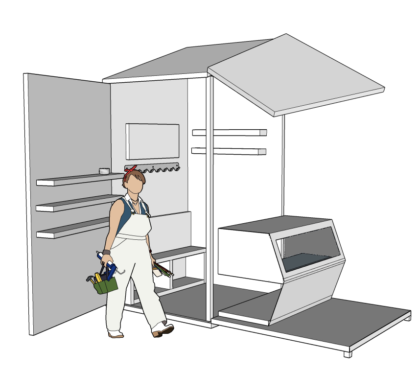

An Art Kiosk Made For Handbuilt Pottery Pieces
CHALLENGE: The design goal was to create a
kiosk/booth that does not exceed a 10ft x 10ft x 10ft
box.
SOLUTION: With this being one of the first projects
I've done with using SketchUp, I wanted to create a
space that would be compact, but could also expand
into a bigger area for different things, whether that
means for display or for purchasing items.